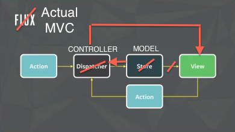
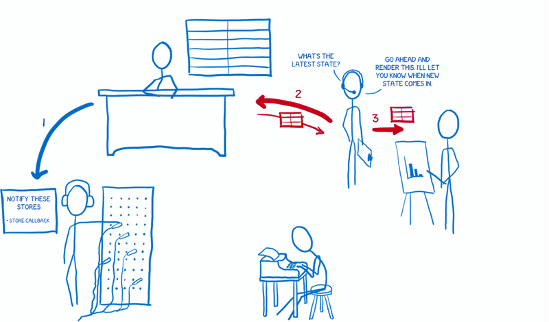
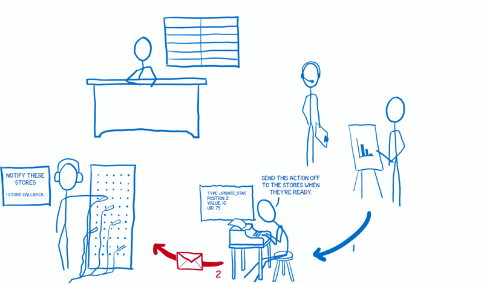
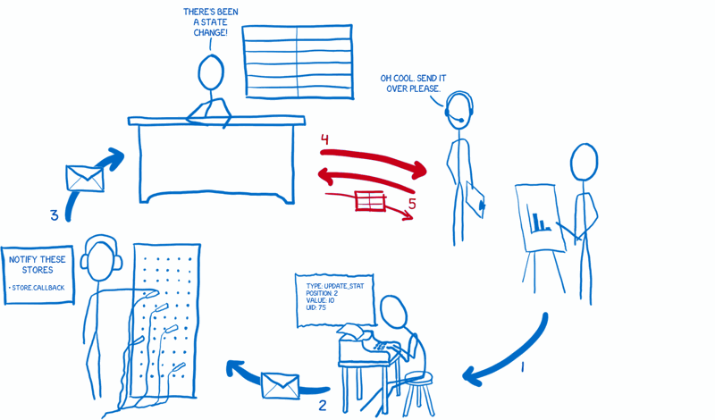

Flux / Redux

FOR BUILDING USER INTERFACES
Flux
- facebook.github.io/flux
- Архитектура
- Односторонний поток данных
Flux

Flux

Flux

Flux
Flux - Facebook Issue
- прислали сообщение
- увеличить счетчик непрочитанных
- добавить сообщение в боковой чат
- если открыта страница сообщений, добавить сообщение в нее
- если открыт собеседник или боковой чат в фокусе, уменшить счетчик непрочитанных
Flux

Flux - Actions
- сделать какой-то асинхронный запрос (опционально)
- передать событие в Dispatcher
- событие - специальная константа + данные
Flux - Actions
const FileConstants = {
FILE_ADD: 'FILE_ADD',
FILE_UPDATE_CONTENT: 'FILE_UPDATE_CONTENT',
COMPILE: 'COMPILE_AUTO'
};
export default FileConstants;
Flux - Actions
import Dispatcher from '../dispatcher';
import FileConstants from '../constants/file';
import Api from '../api';
const FileActions = {
add: function (name) {
Dispatcher.dispatch({
actionType: FileConstants.FILE_ADD,
name: name
});
},
...
};
export default FileActions;
Flux - Actions
const FileActions = {
...
compile: function (files, resultId) {
Api.compile(files).then((result) => {
Dispatcher.dispatch({
actionType: FileConstants.FILE_UPDATE_CONTENT,
id: resultId,
content: result
});
});
}
};
export default FileActions;
Flux - Dispatcher
- обеспечить передачу событий в Store
- управлять зависимостями Store (опционально)
Flux - Dispatcher
const Dispatcher = {
subscribers: [],
subscribe: function (handler) {
this.subscribers.push(handler);
},
dispatch: function (action) {
for (let i = 0; i < this.subscribers.length; i++)
this.subscribers[i](action);
}
};
export default Dispatcher;
Flux - Store
- состояние
- бизнес-логика
- обеспечить оповещение об изменении данных для View
Flux - Store
class Store {
constructor() {
this.seed = 0;
this.data = [];
this.subscribers = [];
}
getAll() {
return this.data;
}
...
}
export default Store;
Flux - Store
class Store {
...
getOne(id) {
return this.data.find(x => x.id);
}
add(item) {
item.id = Date.now() + this.seed++;
this.data.push(item);
}
...
}
Flux - Store
class Store {
...
update(item) {
const index = this.data
.findIndex(x => x.id === item.id);
this.data[index] = Object.assign({}, this.data[index], item);
}
remove(id) {
const index = this.data
.findIndex(x => x.id === id);
this.data.splice(index, 1);
}
...
}
Flux - Store
class Store {
...
emit() {
for (let i = 0; i < this.subscribers.length; i++){
this.subscribers[i]();
}
}
subscribe(handler) {
this.subscribers.push(handler);
}
unsubscribe(handler) {
const index = this.subscribers.indexOf(handler);
this.subscribers.splice(index, 1);
}
}
Flux - Store
class FileStore extends Store {
find(name) {
return this.data.find(x => x.name === name);
}
}
const fileStore = new FileStore();
...
export default fileStore;
Flux - Store
Dispatcher.subscribe((action) => {
switch (action.actionType) {
case FileConstants.FILE_ADD: {
let file = fileStore.find(action.name);
if (!file) return;
file = { name: action.name, content: '' };
fileStore.add(file);
break;
}
...
}
fileStore.emit();
});
Flux - Store
Dispatcher.subscribe((action) => {
switch (action.actionType) {
...
case FileConstants.FILE_UPDATE_CONTENT: {
fileStore.update({
id: action.id,
content: action.content
});
break;
}
default: return;
}
fileStore.emit();
});
Flux - View
- отобразить интерфейс с данными
- подписаться на изменение данных
- Controller-View
Flux - View
import React from 'react';
import FileActions from './actions/file';
import FileStore from './stores/file';
const App = React.createClass({
render: function () {
return (<div className="app-root">
<Tabs tabs={this.state.tabs}/>
<Textbox file={this.state.currentFile}
compile={this._compile}/>
</div>);
},
...
});
Flux - View
const App = React.createClass({
...
componentDidMount: function() {
TabStore.subscribe(this._onChange);
FileStore.subscribe(this._onChange);
},
componentWillUnmount: function() {
TabStore.unsubscribe(this._onChange);
FileStore.unsubscribe(this._onChange);
},
...
});
Flux - View
const App = React.createClass({
...
getInitialState: function () {
return this._getState();
},
_onChange: function () {
const state = this._getState();
this.setState(state);
},
...
});
Flux - View
const App = React.createClass({
...
_compile: function () {
FileActions.compile(this.state.files);
},
_getState: function () {
return {
tabs: TabStore.getAll(),
files: FileStore.getAll(),
currentFile: FileStore.getOne(
TabStore.getCurrent().id
)
};
}
});
Flux - Lifecycle

Flux - Lifecycle
Flux - Lifecycle

Flux - Lifecycle

Flux - Lifecycle

Flux - Lifecycle
Flux - Lifecycle
Flux - Lifecycle
Flux - Lifecycle

Todo (Flux)
Todo (Flux) - Constants
const TodoConstants = {
TODO_INIT: 'TODO_INIT',
TODO_ADD: 'TODO_ADD',
TODO_REMOVE: 'TODO_REMOVE',
TODO_UPDATE: 'TODO_UPDATE',
TODO_TOGGLE: 'TODO_TOGGLE',
TODO_TOGGLE_ALL: 'TODO_TOGGLE_ALL',
TODO_CLEAR: 'TODO_CLEAR'
};
const NavConstants = {
NAV_INIT: 'NAV_INIT',
NAV_ACTIVATE: 'NAV_ACTIVATE'
};
Todo (Flux) - Actions
const TodoActions = {
init: function () {
TodoActions.add('Sleep');
TodoActions.add('Eat');
TodoActions.add('Code');
TodoActions.add('Repeat');
},
add: function (text) {
Dispatcher.dispatch({
actionType: TodoConstants.TODO_ADD,
text: text
});
},
...
};
Todo (Flux) - Actions
const TodoActions = {
...
remove: function (id) {
Dispatcher.dispatch({
actionType: TodoConstants.TODO_REMOVE,
id: id
});
},
update: function (id, text) {
Dispatcher.dispatch({
actionType: TodoConstants.TODO_UPDATE,
id: id,
text: text
});
},
...
};
Todo (Flux) - Actions
const TodoActions = {
...
toggle: function (id) {
Dispatcher.dispatch({
actionType: TodoConstants.TODO_TOGGLE,
id: id
});
},
toggleAll: function () {
Dispatcher.dispatch({
actionType: TodoConstants.TODO_TOGGLE_ALL
});
},
...
};
Todo (Flux) - Actions
const TodoActions = {
...
clear: function () {
Dispatcher.dispatch({
actionType: TodoConstants.TODO_CLEAR
});
}
};
Todo (Flux) - Actions
const NavActions = {
init: function () {
Dispatcher.dispatch({
actionType: NavConstants.NAV_INIT
});
},
activate: function (link) {
Dispatcher.dispatch({
actionType: NavConstants.NAV_ACTIVATE,
link: link
});
}
};
Todo (Flux) - Stores
class TodoStore {
constructor() {...}
getActiveCount() {...}
getCompletedCount() {...}
areAllCompleted() {...}
addItem(text) {...}
removeItem(id) {...}
removeCompleted() {...}
updateItem(id, text) {...}
toggleItem(id) {...}
switchAllTo(completed) {...}
emit() {...}
subscribe(handler) {...}
unsubscribe(handler) {...}
...
}
Todo (Flux) - Stores
class TodoStore {
...
getItems() {
if (!this.activeLink
|| this.activeLink.title === 'All'
) {
return this.list;
} else if (
this.activeLink.title === 'Completed'
) {
return this.list.filter(x => x.completed);
} else {
return this.list.filter(x => !x.completed);
}
}
}
Todo (Flux) - Stores
const todoStore = new TodoStore();
Dispatcher.subscribe((action) => {
const type = action.actionType;
if (type === TodoConstants.TODO_ADD) {
todoStore.addItem(action.text);
} else if (type === TodoConstants.TODO_REMOVE) {
todoStore.removeItem(action.id);
} else if (type === TodoConstants.TODO_UPDATE) {
todoStore.updateItem(action.id, action.text);
} else if (type === TodoConstants.TODO_TOGGLE) {
todoStore.toggleItem(action.id);
} else if ...
});
Todo (Flux) - Stores
Dispatcher.subscribe((action) => {
... else if (type
=== TodoConstants.TODO_TOGGLE_ALL) {
todoStore.toggleAll(
!todoStore.areAllCompleted()
);
} else if (type === TodoConstants.TODO_CLEAR) {
todoStore.removeCompleted();
} else if (type === NavConstants.NAV_ACTIVATE) {
todoStore.activeLink = action.link;
return;
} else return;
todoStore.emit();
});
Todo (Flux) - Stores
class NavStore {
constructor() {...}
getLinks() {...}
getActive() {...}
setActive(link) {...}
emit() {...}
subscribe(handler) {...}
unsubscribe(handler) {...}
}
Todo (Flux) - Stores
const navStore = new NavStore();
Dispatcher.subscribe((action) => {
const type = action.actionType;
if (type === NavConstants.NAV_INIT){
navStore.setActive(navStore.links[0]);
} else if (type === NavConstants.NAV_ACTIVATE) {
navStore.setActive(action.link);
} else return;
navStore.emit();
});
Todo (Flux) - View
const ToDo = React.createClass({
render: function () {...},
componentDidMount: function () {
todoStore.subscribe(this._rerender);
navStore.subscribe(this._rerender);
},
componentWillUnmount: function () {
todoStore.unsubscribe(this._rerender);
navStore.unsubscribe(this._rerender);
},
...
});
Todo (Flux) - View
const ToDo = React.createClass({
...
getInitialState: function() {
TodoActions.init();
NavActions.init();
return this._getState();
},
_getState: function() {
return { remains: todoStore.getActiveCount(),
completed: todoStore.getCompletedCount(),
areAllCompleted: todoStore.areAllCompleted(),
tasks: todoStore.getItems(),
links: navStore.getLinks(),
activeLink: navStore.getActive() };
},
...
});
Todo (Flux) - View
const ToDo = React.createClass({
...
_rerender: function () {...}
_toggleItem: id => TodoActions.toggle(id),
_toogleAll: () => TodoActions.toggleAll(),
_removeItem: id => TodoActions.remove(id),
_addItem: text => TodoActions.add(text),
_updateItem: (id, text)
=> TodoActions.update(id, text),
...
});
Todo (Flux) - View
const ToDo = React.createClass({
...
_removeCompleted: () => TodoActions.clear(),
_navigate: link => NavActions.activate(link)
});